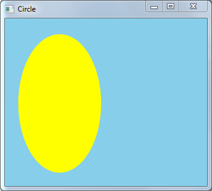

title: Draw Circle Sample
description: This sample application shows how to use mouse input to draw a circle.
ms.assetid: 9AA5D172-0E57-44BB-9CB0-60B613D9D2BA
ms.topic: article
ms.date: 05/31/2018
Draw Circle Sample
This sample application shows how to use mouse input to draw a circle.

Downloading the Sample
This sample is available here.
Related topics